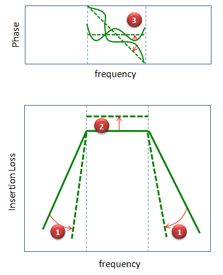

RF - Filter Home : www.sharetechnote.com
Filter is a components that selectively pass "what it likes" and block "what it dislike". When we are talking about the characteristics of filter, we usually describe it in frequency domain.
In most case, a filter would belong to one of the four possible ideal types as shown below(There can be some other variations of filter, e.g, a filter with multiple pass bands etc, but more than 99% of filters you can see would be one of the following types).

Low pass filter is a filter that passes the signal with low frequecy and blocks high frequency signal. How low the frequency should be is dependent on the specification of the filter.
High pass filter is a filter that passes the signal with high frequecy and blocks low frequency signal. How high the frequency should be is dependent on the specification of the filter.
Bandpass filter is a filter that passes a certain range of frequency and blocks both lower and higher region than the specificied range. The frequency range that passes the filter is determined by the specification.
Band Reject filter is a filter that passes most of the frequency except a very narrow range of the frequncy. The purpose of the other types of the filter is to pass signals with a certain range, but the purpose of the band reject filter is to block a selected frequency of the signal.
Ideal filter is the filter as illustrated above. It passes a certain range of the signal and start blocking the signal right next to the range. But as I always say, there is no device which act like ideal concept. Same in filter as well.
Let's look into a bandpass filter as an example. The ideal filter that everybody wants to have is the one as shown on the left, but you would never get this kind of filter. Even in theoretical design of a filter, you would see several types as shown in the middle colum but even this theoretical filter is not as good as the ideal filter.
The first theoretical type has some fluctuations (ripples) in the passband area and relatively steeply fall into the blocking area (stop band) and does not have fluctuations in the stopband.
The second theoretical type does not have ripples either passband nor in stop band. No ripple is very good.. but in this type it slowly falls into the blocking area.
The third theoretical type has ripples both in pass band and stop band which is not good, but it falls into stop band very steeply which is good.
Some of examples of real filter are shown on the right column, which is obviously worse than the theoretical properties. These are only a couple of real filter.. in real world you woud have much diverse type and characteristics of filters.
Typical Implementation of a Filter
There are so many different ways to implement a filter and it would be difficult to list all of possible ways of antenna implementation method. I will just list several ways of implementation which I think are most commonly used in many area. Followings are some examples of filter implementation.
Electrical Filter : This is a method to implement a filter using basic electrical components (e.g,R/L/C) and I think this would be the most common and widely used filter type. Depending on application, only a single component like single Inductor or single capcitor can be a filter and in some other applications you will see very complicated combinations of these component which functions as a filter.
SAW Filter (Surface Acoustic Wave Filter) : This is a type of filter which converts electrical energy into an acoustic energy and apply filtering and then convert the filtered energy back into electrical energy. Adavantage of this type of filter is that it can implement very high quality (very high order filter) in relatively small size. Disadvantage of this type would be that it is hard to handle high power and it generally cause large insertion loss. In most of mobile phone, you would see at least one or two SAW filter mostly in RF stage. They used to use SAW filter in IF stage as well, but now in most mobile phone the whole IF stage is gone and so is the IF SAW filter.
Cavity Filter : When I saw this type of filter I was amazed by the fact that such a simple bulky metalic object can act as a filter. (Internal structure is not as simple as I thought, but at least from outlook it just looked like a metalic chunk -:). In terms of filter characteristics, I would not call it very high performance, but it can handle very high power and the frequency range it can cover can reach up to extremly high frequency and the insertion loss is usually very small compared to other types of filter.
Digital Filter :
Digital Filter : As you may guess, it is a type of filter which perform filtering based on numerical algorithm. To use this filter, first you have to convert the incoming analog signal into digital signal and then process the digitized data. The advatage of this type of filter would be that you can get the filter performance which is almost same as you designed in theory. The disadvantage would be that it would be difficult to handle high frequency mainly due to the limitation of AD converter sampling rate. Of course, you can downconvert the high frequenty to low frequency so that you can use digital filter, but it means you would need additional circuit for filtering. Another disadvantage would be that it would cause relatively long delay due to the delay caused by each digital gate component.
Regardless of what kind of filter you want to design, the basic design goal would all be same as illustrated below.
(1) Steep Transition Phase : The first and the most important characteristics you want to achieve would be the transition phase as sharp as possible as marked by (1). Everybody want to improve this property from the solid line to the dotted line. Usually we increase the order of the filter to achieve this, but this order increment would make the filter bigger or complicated. In case of passive filter, this order increment would cause large insertion loss as well.
One of filters with steepest transition phase without increasing the size too much would be 'SAW' filter, but Insertion Loss of SAW filter is relatively large comparing to other types of filters. Especially IF SAW filter has extremely sharp transition but super large insertion loss.
(2) Small Insertion Loss : Needless to day, everybody wants to have the insertion loss as small as possible, but it is not easy to improve the insertion loss, especially when the loss is caused by the material property of the filter (e.g, SAW filter).
(3) Phase Linearity : Everybody want to have non-changing or at least linear phase characteristics across the passband region as shown in dotted line, but in reality most of the filter would have the fluctuating, sometimes even more complicated phase characteristics. Unfortunately it is extremely difficult to optimize the phase characteristics.
